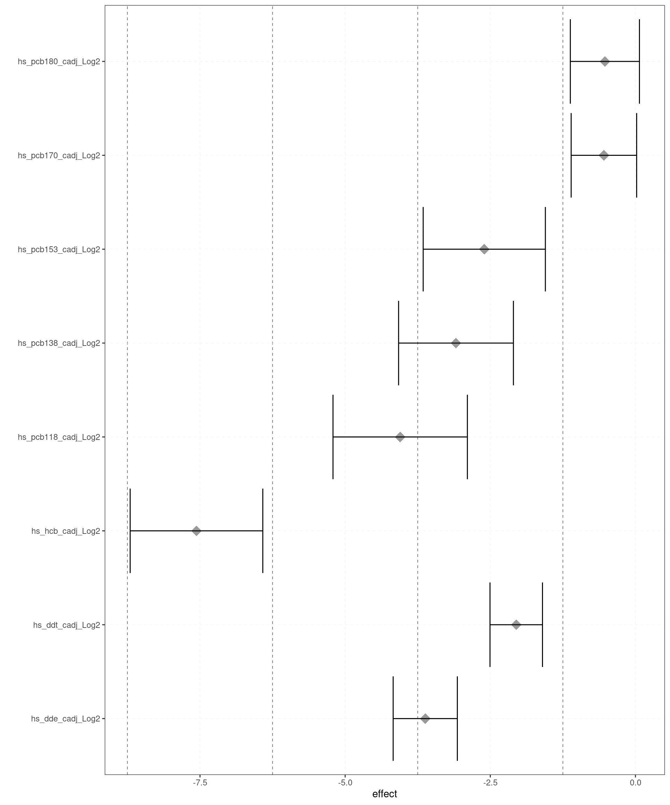

2 Exposome data analysis in the HELIX project.
The main aim of this chapter is to illustrate how to perform an exposome analysis on a multi-centre study framework using DataSHIELD. Particularly, we will cover how to apply Exposome Wide Association Analysis (ExWAS) and variable selection with penalized regressions. To illustrate the power and possibilities emanating from DataSHIELD in this context, we will replicate some of the analyses conducted in (Warembourg et al. 2019), in which the association between a wide range of prenatal and postnatal exposures and blood pressure in children is investigated.
For that purpose, we will use the exposome data from the HELIX project previously described (section 1.1), and two DataSHIELD packages; (1) the dsExposomeClient developed by the BRGE research group, and (2) the dsMTLClient by (Cao et al. 2021). Some topics covered in this tutorial include: 1) Setting up the R environment for working with these packages in DataSHIELD, 2) Loading the HELIX data from an Opal server to the DataSHIELD environment, and 3) Application of ExWAS and Lasso regression for association analysis and variable-selection.
2.1 Getting started.
In this section, we will describe how to configure R and DataSHIELD with the needed packages to carry out proposed analyses in remote.
We start by installing the client-side version of the following DataSHIELD/Opal integration packages.
install.packages("DSOpal", dependencies=TRUE)
install.packages("DSI", dependencies=TRUE)Make sure you also install the DataSHIELD client-side version of the package dsBaseClient.
install.packages("dsBaseClient",
repos = c("http://cran.datashield.org","https://cloud.r-project.org/"),
dependencies = TRUE)Then, install the client-side version of the dsExposomeClient and dsMTLClient packages directly from GitHub.
install.packages("devtools")
require("devtools")
devtools::install_github("isglobal-brge/dsExposomeClient")
devtools::install_github("transbioZI/dsMTLClient")Once installations are completed, all the packages are loaded as usual.
require(DSOpal)
require(DSI)
require(dsBaseClient)
require(dsExposomeClient)
require(dsMTLClient)
# Loading additional required packages
require(dplyr)
require(ggplot2)
require(ggrepel)
require(EnhancedVolcano)
require(tidyverse)
require(ggrepel)
require(reshape2)
require(RColorBrewer)In this tutorial, we will use the Opal BRGE site to illustrate how to perform mentioned analyses in DataSHIELD. Details for accessing the server can be found below. Before starting analysis, it is always advisable to check that the server-side version of the functions of these packages are available in the Opal server. For that purpose, once you are logged into the Opal, you can use the function datashield.methods(conns). If they are not, please, ask your data manager for their installation.
2.2 Data formatting and manipulation in DataSHIELD.
In this section, we will cover how to manipulate and prepare input data with DataSHIELD according to the needs of the functions available in the dsExposomeClient and dsMTLClient packages.
We start by creating the connection to the opal server using an user who have DataSHIELD permissions to Opal servers. Please, note that in our example, all datasets are hosted in the same Opal but each cohort sub-dataset is accessed separately. In the case each cohort dataset was available in a different Opal, the way of login data would be the same but specifying different connection details.
builder <- DSI::newDSLoginBuilder()
builder$append(server = "BIB", url = "https://datashield.isglobal.org/repo",
user = "invited", password = "12345678",
profile = "rock-inma")
builder$append(server = "EDEN", url = "https://datashield.isglobal.org/repo",
user = "invited", password = "12345678",
profile = "rock-inma")
builder$append(server = "KANC", url = "https://datashield.isglobal.org/repo",
user = "invited", password = "12345678",
profile = "rock-inma")
builder$append(server = "MoBA", url = "https://datashield.isglobal.org/repo",
user = "invited", password = "12345678",
profile = "rock-inma")
builder$append(server = "Rhea", url = "https://datashield.isglobal.org/repo",
user = "invited", password = "12345678",
profile = "rock-inma")
builder$append(server = "INMASAB", url = "https://datashield.isglobal.org/repo",
user = "invited", password = "12345678",
profile = "rock-inma")
logindata <- builder$build()
conns <- DSI::datashield.login(logins = logindata)Next, we will load all the resources available in the Opal server, corresponding to each cohort exposomeSet file, using the DSI::datashield.assign.resource() function. This function takes the connections to the server created in the previous code chunk to assign all available resource objects from the the Opal to an R object in the DataSHIELD remote session. As it can be seen in the code, resources in DataSHIELD are called in the function following the next structure “NameOfOpalProject.NameOfResource”.
# We assign post-natal data from all cohorts to an object called resource_pos
DSI::datashield.assign.resource(conns[1], "resource_pos", "HELIX.postnatal_BIB")
DSI::datashield.assign.resource(conns[2], "resource_pos", "HELIX.postnatal_EDE")
DSI::datashield.assign.resource(conns[3], "resource_pos", "HELIX.postnatal_KAN")
DSI::datashield.assign.resource(conns[4], "resource_pos", "HELIX.postnatal_MOB")
DSI::datashield.assign.resource(conns[5], "resource_pos", "HELIX.postnatal_RHE")
DSI::datashield.assign.resource(conns[6], "resource_pos", "HELIX.postnatal_SAB")
# We assign pre-natal data from all cohorts to an object called resource_pre
DSI::datashield.assign.resource(conns[1], "resource_pre", "HELIX.pregnancy_BIB")
DSI::datashield.assign.resource(conns[2], "resource_pre", "HELIX.pregnancy_EDE")
DSI::datashield.assign.resource(conns[3], "resource_pre", "HELIX.pregnancy_KAN")
DSI::datashield.assign.resource(conns[4], "resource_pre", "HELIX.pregnancy_MOB")
DSI::datashield.assign.resource(conns[5], "resource_pre", "HELIX.pregnancy_RHE")
DSI::datashield.assign.resource(conns[6], "resource_pre", "HELIX.pregnancy_SAB")Then, we have to resolve the resources and retrieve the data in the remote session (server-side). For that, we will use the DSI::datashield.assign.expr() function. This function will assign the result of the execution of the argument expr to an R object called exposome_set in the Datashield remote session. In particular, we run the function as.resource.object(), which is the DataSHIELD function in charge of resolving resources (it coerces the resource to an internal data object that depends on the implementation of the object). As a result, we will get an R object (here named “exposome_Set_pos” for post-natal data, and “exposome_Set_pre” for pre-natal data) containing the “exposomeSets” files for all cohorts.
# We resolve the resource for post-natal data
DSI::datashield.assign.expr(conns = conns, symbol = "exposome_set_pos",
expr = as.symbol("as.resource.object(resource_pos)"))
# We resolve the resource for pre-natal data
DSI::datashield.assign.expr(conns, symbol = "exposome_set_pre",
expr = as.symbol("as.resource.object(resource_pre)"))Once we have loaded the resources, we have also to load each of the tables with additional phenotypes available for each cohort in the Opal server. For that purpose, we will use the DSI::datashield.assign.table() function, which assigns tables to an R object in the remote session (here named pheno). As a result, the pheno object will contain six data.frames corresponding to each of the tables with extra phenotype data for the cohorts.
DSI::datashield.assign.table(conns[1], "pheno", "HELIX.subclinical_cardio_BIB")
DSI::datashield.assign.table(conns[2], "pheno", "HELIX.subclinical_cardio_EDE")
DSI::datashield.assign.table(conns[3], "pheno", "HELIX.subclinical_cardio_KAN")
DSI::datashield.assign.table(conns[4], "pheno", "HELIX.subclinical_cardio_MOB")
DSI::datashield.assign.table(conns[5], "pheno", "HELIX.subclinical_cardio_RHE")
DSI::datashield.assign.table(conns[6], "pheno", "HELIX.subclinical_cardio_SAB")To verify previous steps were performed correctly, we could apply some data analysis functions on created objects. For example, we can check the class of each object, or the name of the variables included, so we ensure that they exist on the remote session. Since each exposome_set object (pre, and pos) contains exposomeSet-type files for each cohort, the process for retrieving the names of variables in their case is slightly different than for the data.frames available in pheno. For that, we have two functions from the ds.ExposomeClient package called ds.phenotypeNames() and ds.exposome_variables().
# Get the class of the remote "exposome_set" and "pheno" objects for the EDEN
# cohort:
ds.class("exposome_set_pos")$EDEN[1] "ExposomeSet"
attr(,"package")
[1] "rexposome"ds.class("exposome_set_pre")$EDEN[1] "ExposomeSet"
attr(,"package")
[1] "rexposome"ds.class("pheno")$EDEN[1] "data.frame"# Get the name of the first 5 columns available in the EDEN data.frame of the
# "pheno" object:
ds.colnames("pheno")$EDEN[1:5][1] "HelixID" "hs_bp_sys" "hs_bp_dia" "hs_zsys_bp" "hs_zdia_bp"# Get the name of the first 5 phenotypes available in the "exposome_Set" files
# for the EDEN cohort.
ds.phenotypeNames("exposome_set_pos", conns)$EDEN[1:5][1] ".id.1" ".imp.1" "HelixID" "SampleID"
[5] "hs_bmicat_None"ds.phenotypeNames("exposome_set_pre", conns)$EDEN[1:5][1] ".id.1" ".imp.1" "HelixID" "SampleID"
[5] "hs_bmicat_None"# Get the name of the first 5 exposure variables available in the
# "exposome_Set" files for the EDEN cohort.
ds.exposome_variables("exposome_set_pos" , target="exposures")$EDEN[1:5][1] "FAS_cat_None" "h_Absorbance_Log" "h_Benzene_Log" "h_bfdur_Ter"
[5] "h_NO2_Log" ds.exposome_variables("exposome_set_pre" , target="exposures")$EDEN[1:5][1] "e3_alcpreg_yn_None" "e3_asmokyn_p_None"
[3] "h_abs_ratio_preg_Log" "h_accesslines300_preg_dic0"
[5] "h_accesspoints300_preg_Log"We will now merge the additional phenotype data available in “pheno” to the outcomes already available in each “exposome_set” file. To do that, there is a function from the dsExposomeClient package called ds.addPhenoData2ExposomeSet(). This function add new phenotype data contained on a data.frame to an exposomeSet. The exposomeSet may or may not already have phenotype data. If the data.frame contains a phenotype already present on the exposomeSet, the server function will throw an exception. In the example, we will employ the “HelixID” variable as the identifier to match subjects from each dataset.
# Adding phenotype data to post-natal datasets.
ds.addPhenoData2ExposomeSet("exposome_set_pos", "pheno",
identifier_ExposomeSet = "HelixID",
identifier_new_phenotypes = "HelixID")
# Adding phenotype data to pre-natal datasets.
ds.addPhenoData2ExposomeSet("exposome_set_pre", "pheno",
identifier_ExposomeSet = "HelixID",
identifier_new_phenotypes = "HelixID")We can check the process has been conducted successfully by exploring the dimensions of the new “exposome_set” files created.
# Get dimensions of each "exposome_set" file for the EDEN cohort.
ds.dim("exposome_set_pos")[[2]]exposures samples phenotyes
115 198 88 ds.dim("exposome_set_pre")[[2]]exposures samples phenotyes
93 198 88 # We can also check if there is metadata available in each "exposome_set"
# file describing the families of exposomes.
ds.familyNames("exposome_set_pos")$EDEN[1:5][1] "Socio-eco capital_Fac" "Indoor air" "Lifestyle"
[4] "Built Environment" "Metals" ds.familyNames("exposome_set_pre")$EDEN[1:5][1] "Lifestyle_fac" "Tobacco Smoke_fac" "Air Pollution"
[4] "Built Environment_fac" "Built Environment" 2.3 Implementation of ExWAS in DataSHIELD.
The main aim of this chapter is to illustrate how to apply Exposome Wide Association Analysis (ExWAS) in the prepared data from the HELIX project. Particularly, we will be replicating some of the analyses conducted in (Warembourg et al. 2019), in which the association between a wide range of postnatal exposures and blood pressure (BP) phenotypes in children was investigated. In the childhood period, this work identified a bulk of external and internal exposures affecting both diastolic and systolic blood pressure measurements (Figure 2.1). Here, for simplification, we will only replicate the findings reported for the post-natal period and the systolic blood pressure phenotype (framed in red in Figure 2.1).
![Environmental-Wide Association Study Between Postnatal Exposome and Systolic and Diastolic Blood Pressure in the HELIX cohort (Warembourg C et al. (2019)[@WAREMBOURG20191317].](fig/charline_Bp.png)
Figure 2.1: Environmental-Wide Association Study Between Postnatal Exposome and Systolic and Diastolic Blood Pressure in the HELIX cohort (Warembourg C et al. (2019)(Warembourg et al. 2019).
The exact estimates and 95% confidence intervals (CIs) obtained for these exposures in the paper are presented in Table 2.1.
| Systolic Blood Pressure | Diastolic Blood Pressure | |||
|---|---|---|---|---|
| Exposure | Beta [95% CI] | P-value | Beta [95% CI] | P-value |
| DDE | -2.1 [-2.92; -1.28] | <0.00001 | -1.11 [-1.88; -0.34] | 0.00471 |
| HCB | -2.05 [-2.82; -1.29] | <0.00001 | -0.82 [-1.54; -0.10] | 0.02640 |
| PCB 153 | -1.90 [-2.85; -0.95] | 0.00009 | -0.81 [-1.70; 0.09] | 0.07759 |
| PCB 170 | -1.73 [-2.73; -0.73] | 0.00068 | -0.93 [-1.86; 0.00] | 0.05118 |
| PCBs (sum) | -1.93 [-2.94; -0.92] | 0.00018 | -0.91 [-1.85; 0.04] | 0.05999 |
Importantly, these analyses were adjusted by confounders such as child age, child height, child sex, child cohort, mother”s age at the moment of birth and mother’s BMI at the moment of birth. In the next chunk of code, we perform some basic exploratory analyses on these confounders and the outcome.
# Retrieve basic summary statistics for the main outcome under study (systolic
# blood pressure) in the EDEN cohort.
# The function can be also applied to categorical variables.
ds.exposome_summary("exposome_set_pos", "hs_bp_sys", conns)$EDEN$class
[1] "numeric"
$length
[1] 198
$`quantiles & mean`
5% 10% 25% 50% 75% 90% 95% Mean
92.5000 96.5000 100.5000 105.5000 111.5000 118.1500 121.5000 106.2854 At this point, we are ready to apply the ExWAS on the systolic blood pressure phenotype. For simplification, we will start focusing in the particular set of exposures belonging the OCs family, which presented the highest significance values according to (Warembourg et al. 2019) paper (Figure 2.1).
The ExWAS will be performed using the ds.exwas() function, from the “ds.ExposomeClient” package. As we will see, there are several ways of applying an ExWAS in DataSHIELD (pooled vs. meta), and the chosen method will depend on the characteristics of each project. Both methods are based on iteratively fitting different generalized linear models (GLMs) for each feature/exposure assessing association with the phenotype of interest. The “virtually” pooled approach is recommended when the user wants to analyse data from different sources and obtain results as if the data were located in a single computer. Nevertheless, it should be noticed that this method is not recommended when data are not properly harmonized, or are not comparable between cohorts, whatever the reason. On the other hand, the federated meta-analysis approach performs an ExWAS on every study server to later meta-analyse the results. Thanks to that, it overcomes the limitations raised when performing pooled analysis.
In the next chunk of code, we present how to apply a pooled ExWAS to the HELIX data example. Since in our example, for simplification, we want to focus only on OCs exposures, it will be vital that our exposomeSet input files count on metadata or a description file. Then, we will use the “exposure_family” argument to indicate the family group of exposures to restrict our analysis to. Other arguments available in the ds.exwas() function include the “family” argument, which refers to the type of link function to be used in the GLM (e.g., gaussian for continuous outcomes, binary for binary outomes, or poisson for counts). It’s important to note that if the family argument does not match with the nature of the data available in the phenotype, the ExWAS will fail.
# ExWAS with pooled approach (without adjusting for confounders). Estimated
# execution time: approx. 4.675414 mins
res.pooled_pos <- ds.exwas("hs_bp_sys ~ 1", type = "pooled",
exposures_family = "OCs",
Set = "exposome_set_pos", family = "gaussian")[1] "The computation of threshold for effective tests was not successful. NAs were generated on the correlation matrix so the calculation was aborted."head(res.pooled_pos)$exwas_results
exposure family coefficient minE maxE p.value
1 hs_dde_cadj_Log2 OCs -3.6203404 -4.173032 -3.06764924 9.976229e-38
2 hs_ddt_cadj_Log2 OCs -2.0533429 -2.505415 -1.60127115 5.470142e-19
3 hs_hcb_cadj_Log2 OCs -7.5606414 -8.702722 -6.41856079 1.694248e-38
4 hs_pcb118_cadj_Log2 OCs -4.0522375 -5.209499 -2.89497594 6.744828e-12
5 hs_pcb138_cadj_Log2 OCs -3.0908785 -4.079692 -2.10206552 8.980604e-10
6 hs_pcb153_cadj_Log2 OCs -2.6037560 -3.655924 -1.55158813 1.233115e-06
7 hs_pcb170_cadj_Log2 OCs -0.5434277 -1.107247 0.02039150 5.888131e-02
8 hs_pcb180_cadj_Log2 OCs -0.5266027 -1.121772 0.06856693 8.288881e-02
$alpha_corrected
[1] 0.0121022As we said, ds.exwas will fit GLMs between the exposures and the phenotype as follows:
phenotype ~ exposure_1 + covar1 + ... + covarN
phenotype ~ exposure_2 + covar1 + ... + covarN
phenotype ~ exposure_3 + covar1 + ... + covarN
...
phenotype ~ exposure_M + covar1 + ... + covarNThe model is written as a string, where the left side term is the phenotype, and the right term are the covariates or confounders (e.g., variables to be adjusted for). A crude model is fitted in our particular example using phenotype ~ 1. In the case of having more adjusting covariates proceed as: phenotype ~ cov1 + cov2 + ... + covN.
To visualize the results from the ExWAS, the ds.ExposomeClient package has the function ds.plotExwas(), which takes the output of ds.exwas() and creates two different visualizations depending on the argument “type”. Given the nature of the “Manhattan plots,” it should be noted that this kind of visualizations is more appropriated when performing an ExWAS study with a higher number of exposures rather than when focusing in a group of exposures such is the current case.
We can also generate a plot showing the effects (beta values) and their confidence intervals with:
# One plot for the whole population
ds.plotExwas(res.pooled_pos, type="effect")
To replicate the findings from (Warembourg et al. 2019), we will now repeat the pooled ExWAS but including previously mentioned adjusting covariates. Importantly, the order to adjust the models by cohort is given separately to the function, directly with the argument “adjust.by.study”.
# Adjust by cohort and other confounders.
# Estimated execution time: approx. 6.830064 mins
res.pooled_adjusted_pos <- ds.exwas("hs_bp_sys ~ hs_child_age_days_None + hs_c_height_None + e3_sex_None + h_age_None + h_mbmi_None", type = "pooled",
adjust.by.study = TRUE,
exposures_family = "OCs",
Set = "exposome_set_pos", family = "gaussian")
head(res.pooled_adjusted_pos)As it can be seen, we are able to validate the main findings presented in the paper, reporting an inverse association between the concentration of some of these OCs and the systolic blood pressure levels of children.
Next, we repeat the process without restricting to the OCs family.
# Adjust by cohort and other covariates.
# Estimated execution time: approx. 50 mins
res.pooled_adjusted_pos <- ds.exwas("hs_bp_sys ~ hs_child_age_days_None + hs_c_height_None + e3_sex_None + h_age_None + h_mbmi_None", type = "pooled",
adjust.by.study = TRUE,
Set = "exposome_set_pos", family = "gaussian")
head(res.pooled_adjusted_pos)The effect sizes and p-values derived from the ExWAS can be accessed with the command res.pooled_adjusted_pos$exwas_results, and then plotted in a volcano visualization.
dbvolcan <- as.data.frame(res.pooled_adjusted_pos$exwas_results)
codebook <- read.csv2("./fig/codebook_HELIX.csv")
codebook <- codebook[1:544,]
rownames(codebook) <- codebook[,4]
dbvolcan$exposure <- codebook[dbvolcan$exposure,5]
data <- dbvolcan %>%
mutate(
Expression = case_when(coefficient > 0 &
p.value <= 0.05 ~ "Proportional-relationship",
coefficient < 0 &
p.value <= 0.05 ~ "Inverse-relationship",
TRUE ~ "Unchanged")
)
p1 <- ggplot(data, aes(coefficient, -log(p.value,10))) +
geom_point(aes(color = Expression), size = 2/5) +
xlab(expression("Beta")) +
ylab(expression("-log"[10]*"pvalue")) +
scale_color_manual(values = c("firebrick3","dodgerblue3","gray50")) +
guides(colour = guide_legend(override.aes = list(size=1.5)))
top <- 10
top_symbol <- bind_rows(
data %>%
filter(Expression == 'Inverse-relationship') %>%
arrange(p.value, desc(abs(coefficient))) %>%
head(top),
data %>%
filter(Expression == 'Proportional-relationship') %>%
arrange(p.value, desc(abs(coefficient))) %>%
head(top)
)
p1 + geom_label_repel(data = top_symbol,
mapping = aes(coefficient, -log(p.value,10),
label = exposure),
size = 2)2.4 Feature selection with penalized methods.
In this subsection, we present how to perform variable selection with penalized regression methods in an exposome context. As previously mentioned, the dsMTL package allows the implementation of a federated version of conventional regularized regression techniques (such as Lasso, Ridge or Elastic-net), both in the context of continuous or binary outcomes (linear and logistic regression, respectively). Here, we will show how to apply these methods to the HELIX data example, focusing in the systolic blood pressure outcome (Warembourg et al. 2019). In the paper, the selection of important exposures was determined by the DSA (Deletion-Substitution-Addition) algorithm. DSA selections were performed separately for the prenatal and postnatal time points, and for systolic and diastolic blood pressure phenotypes. For the postnatal period, a list of selected variables can be found in Figure 2.2 framed in red.
![Exposures Selected Into the Multiple-Exposure Models from [@WAREMBOURG20191317].](fig/charline%20DSA_highlighted.png)
Figure 2.2: Exposures Selected Into the Multiple-Exposure Models from (Warembourg et al. 2019).
<br
In this tutorial, we will use Lasso regression for variable selection.
Since the functions from the dsMTL package require data of each cohort to be passed as separate matrices for predictors and the outcome, and we have our data as exposomeSet files, we will have to do some data preparation before starting the analysis. Particularly, we will start by generating two data.frames, one for exposure data and one for the outcome data. For that, we have the function ds.exposures_pData(), which extracts exposures, phenotype or combined data from an exposomeSet to generate a new data.frame on the server side.
# With the "name" argument, we can specify the name of the new R object
# to be created.
# Extract exposures
ds.exposures_pData("exposome_set_pos",
type = "exposures", exposures_type = "numeric",
name = "table_exposures")
# Extract phenotype
ds.exposures_pData("exposome_set_pos",
type = "phenotypes", exposures_type = "numeric",
name = "table_phenotypes")Once we have different objects for exposure and phenotype data respectively, we can continue with the data preparation.
# We start by assigning the outcome "Systolic Blood pressure" to a new R object
# of the type numeric vector called "Y" in the server side.
ds.assign(toAssign="table_phenotypes$hs_bp_sys", newobj="Y_raw",
datasources = conns)
# We check if there is any NA value in the phenotype vector.
ds.numNA("Y_raw")
# We replace NA values by the cohort mean.
Y_means <- ds.mean(x = "Y_raw",type = "split",save.mean.Nvalid = F,
datasources = conns)$Mean.by.Study
ds.replaceNA(x = "Y_raw", forNA = Y_means[,1], newobj = "Y",
datasources = conns)
# We again check dimensions and attribute names for the resulting objects.
ds.dim("table_exposures")
ds.class("table_exposures")
ds.colnames("table_exposures")[[1]][1:5]
ds.class("Y")
ds.length("Y")
# We coerce both Xs and Y into matrices.
#ds.asMatrix(x.name = "table_exposures", newobj = "X", datasources = NULL)
ds.asMatrix(x.name = "table_exposures", newobj = "X", datasources = NULL)
ds.asMatrix(x.name = "Y", newobj = "Y", datasources = NULL)
# We assign both matrices from the remote session to R objects
# in the client-side.
X="X"; Y="Y"Once we have the data properly formatted, we can proceed to perform variable selection with penalized methods. Available functions in the package for such purpose include:
- ds.LS_Lasso(): Solver of regression with Lasso.
- ds.LR_Lasso(): Solver of logistic regression with Lasso.
- ds.Lasso_Train(): Train a regularization tree with Lasso for a sequence of penalty values (than can be either provided by the user, or directly estimated from the data).
- ds.Lasso_CVInSite(): In-site cross-validation procedure for selecting the optimal penalty.
In all these functions, there is an argument called “C”, which is the hyperparameter for the Ridge regression L2 penalty. Thus, by tuning both the L1 penalty and the C argument (L2 term), one would be able to choose between a Lasso, Ridge or Elastic-Net regression. Likewise, there is an argument called “opts”, which allow for controlling the optimization algorithm employed to minimize the sum of squared errors (SSE) (objective function). Additional details regarding the loss function implemented in these models can be found in the supplementary material of (Cao et al. 2021). Within the “opts” argument we find:
“init”: It determines the starting point.
“maxIter”: It is the maximized iteration number.
“ter”: It refers to the termination rule used to determine the convergence of the algorithm. There are three termination rules available for ds.lasso. The first rule checks whether the current objective value was close enough to 0. The second rule investigates the last two objective values and checks whether the decline was close enough to 0. The third rule allowed the optimization to be performed for a certain maximum number of iterations.
“tol”: It refers to the precision of the convergence and determines the termination of the program.
# Default values for the opts argument.
opts=list();opts$init=0; opts$maxIter=10; opts$tol=0.01; opts$ter=2;A summary of the functions that one could use in DataSHIELD for performing feature selection with Lasso regression can be found in Figure 2.3.

Figure 2.3: DataSHIELD for the implementation of penalized Lasso regression in a federated framework.
2.4.1 Lasso regression for a given lambda value.
With the ds.LS_Lasso() function, we can apply the lasso solver of regression for a particular value of the lambda penalty. Input arguments available in the function include:
- X: The design matrices of multiple cohorts.
- Y: Label vectors of multiple cohorts.
- lam: Input lambda value.
- C: The hyper-parameter associated with L2 term.
- opts: Options controlling the optimization procedure.
- datasources: The connections of servers.
- nDigits: The number of digits rounded for each number prepared for network transmission.
- W: The current estimate of the variables (if available).
Note that if we set lam=0 and C>0 we will do Ridge regression, lam>0 and C=0 we will do Lasso, while any other combination of these both will be Elastic-Net.
The output of this function comprises:
- The vector of weights estimated for input predictors.
- The converged result of optimization.
- The proximal point of W and the non-smooth part of objective.
In the next chunk, we apply this function to our example dataset, setting the value of the lambda penalty to “38.” For this, we will test the association between the 79 input predictors and the continuous outcome Systolic blood pressure. In case we were interested in modeling a binary outcome, we should use the ds.LR_Lasso() function instead, which share exactly the same arguments and options.
# Estimated execution time: approx. 1.976153 mins
set.seed(123)
m1=ds.LS_Lasso(X=X, Y=Y, lam=38, C=0, opts, datasources=conns, nDigits=15)
# Get the number of selected variables by the model for the assessed lambda
sum(m1$w!=0)[1] 63In our example, with this lambda penalty, 61 variables are selected as significant contributors to the outcome systolic blood pressure phenotype. Now, we can get the names of selected variables and plot estimated coefficients from the model.
# Get names of selected variables
toplot <- data.frame(m1$w,ds.colnames(X)[[1]])
colnames(toplot) <- c("Coefficient","Index")
sel_var_m1 <- toplot[which(toplot$Coefficient != 0),2]
codebook <- read.csv2("./fig/codebook_HELIX.csv")
codebook <- codebook[1:544,]
rownames(codebook) <- codebook[,4]
fun1 <- function(x) { codebook[x,5] }
fun1(sel_var_m1) [1] "Benzene in" "NO2 in" "PM2.5 in"
[4] "BTEX in" "Access_stops_home" "BPA"
[7] "Building_home" "BUPA" "Cd"
[10] "Co" "Connectivity" "Cs"
[13] "Cu" "DDE" "DEP"
[16] "Distance road" "DMDTP" "Facility_dens"
[19] "HCB" "House crowding" "Hum.(month)"
[22] "K" "KIDMED" "MBZP"
[25] "MECPP" "MEHHP" "MEHP"
[28] "MEOHP" "MEP" "MEPA"
[31] "Mg" "MIBP" "Mn"
[34] "MNBP" "PA" "Na"
[37] "NO2 out" "OHMiNP" "OXBE"
[40] "OXOMINP" "Pb" "PBDE 153"
[43] "PBDE 47" "PCB 118" "PCB 138"
[46] "PCB 153" "PCB 180" "PFHXS"
[49] "PFNA" "PFOS" "PFUNDA"
[52] "PM10" "PM2.5" "Population"
[55] "PRPA" "Sedentary" "Se"
[58] "T(month)" "Trafficload - nearest" "Traffic near"
[61] "UV(month)" "Zn" "Mat. stress" # Plot estimated coefficients
ggplot(toplot, aes(x=Index, y=Coefficient)) +
geom_point() +
geom_jitter(width=0.15) +
theme(text = element_text(size=5), axis.text.x = element_text(angle = 90))2.4.2 ds.Lasso_Train() function.
Instead of using a single value of lambda and fitting the model, a whole lambda sequence can be tested (either if it has been defined by the user, or if it has been estimated from the data). For that purpose, we must use the function ds.Lasso_Train(), which trains a whole regularization tree with Lasso for a set of penalty values.
Some input arguments available here and not present in the previous function are:
type: Regression(=regress) or classification(=classify).
nlambda: The length of lambda sequence.
lam_ratio: This is an option affecting how the lambda sequence is extracted from the data. It refers to the ratio: \(min(lambda) / max(lambda)\).
lambda: The lambda sequence.
intercept: Use intercept(=TRUE) or non-intercept(=FALSE) model.
The process of lambda sequence estimation from the data in this function is governed by two arguments: “nlambda” and “lam_ratio”. First, the lambda max is determined as the smallest value of lambda for which no parameters are selected. In the next chunk, we show the code lines of the function source code that extract the lambda max value from the data.
xys = DSI::datashield.aggregate(datasources, call("xtyDS", X, Y))
# matrix multiplication x * t(y)
xys = rowSums(do.call(cbind, xys))/sum(nSubs)
xy_norm = max(abs(xys))The determination of λmin and the number of grid points seems less principled. The λmin is calculated as \(λmin=λratio∗λmax\), and then a grid of n equally spaced points on the logarithmic scale between λmin and λmax is generated.
The output of the ds.Lasso_Train() function is a list composed of:
- A matrix with as many columns as lambdas and as many rows as variables including the estimated coefficients for each variable-lambda.^
- A vector with the sequence of lambdas (either if they were estimated from data or introduced by the user).
Next, we show how to apply this function to our showcase, estimating a sequence of 10 lambda penalties from the data (with a lambda ratio of 0.001).
# Estimated execution time: approx. 19.1657 mins
m2=ds.Lasso_Train(X=X, Y=Y, type="regress", nlambda=10, lam_ratio=0.001,
C=0, opts=opts,datasources=conns, nDigits=15)From the output of this function, the number and names of selected variables for each lambda value can also be extracted:
# Get the number of selected variables per lambda
fun2 <- function(x) { length(which(x != 0)) }
apply(m2$ws,2,fun2) Lam=38347.3 Lam=17799.24 Lam=8261.68 Lam=3834.73 Lam=1779.92 Lam=826.17
1 1 2 2 2 3
Lam=383.47 Lam=177.99 Lam=82.62 Lam=38.35
4 5 13 22 # Get the name of selected variables per lambda
variable_names <- ds.colnames("X")[[1]]
fun3 <- function(x) { variable_names[which(x != 0)] }
sel_var_per_lam_m2 <- apply(m2$ws,2,fun3)
lapply(sel_var_per_lam_m2,fun1)$`Lam=38347.3`
[1] "Building_home"
$`Lam=17799.24`
[1] "Building_home"
$`Lam=8261.68`
[1] "Building_home" "Sedentary"
$`Lam=3834.73`
[1] "Building_home" "Sedentary"
$`Lam=1779.92`
[1] "Building_home" "Sedentary"
$`Lam=826.17`
[1] "Building_home" "Hum.(month)" "Sedentary"
$`Lam=383.47`
[1] "Building_home" "Hum.(month)" "PA" "Sedentary"
$`Lam=177.99`
[1] "Building_home" "Hum.(month)" "PA" "PM10"
[5] "Sedentary"
$`Lam=82.62`
[1] "Building_home" "Cu" "Hum.(month)"
[4] "K" "PA" "Na"
[7] "PM10" "PM2.5" "Population"
[10] "Sedentary" "T(month)" "Trafficload - nearest"
[13] "Zn"
$`Lam=38.35`
[1] "Building_home" "Connectivity" "Cu"
[4] "DDE" "Hum.(month)" "K"
[7] "MECPP" "MEHHP" "MEP"
[10] "Mg" "MIBP" "PA"
[13] "Na" "PM10" "PM2.5"
[16] "Population" "Sedentary" "Se"
[19] "T(month)" "Trafficload - nearest" "Traffic near"
[22] "Zn" # We save the estimated sequence of lambdas in a variable named lamseq.
lamseq <- m2$lam_seq
lamseq [1] 38347.30370 17799.24167 8261.67614 3834.73037 1779.92417 826.16761
[7] 383.47304 177.99242 82.61676 38.34730And we can plot the results (regularization tree). If the estimation of the λmax penalty has been performed correctly, all horizontal lines in the plot should begin with w=0, since, as we said before, by definition, the λmax is the smallest value of lambda for which no parameters are selected.
matplot(t(m2$ws), type = "l", main="solution Path", xlab = "lambda",
ylab = "coefficients")
Please, note that the values in the X axis refer to the appearance order of each lambda in the lambda sequence vector, i.e., Lam1=38347.3, Lam2=17799.24167, Lam3=8261.67614 and Lam4=3834.73037 … and so on.
2.4.3 ds.Lasso_CVInSite() function.
The dsMTL package also allows the selection of the optimal lambda by a k-fold cross-validation (CV) procedure. This is done with the function ds.Lasso_CVInSite(), which has practically the same arguments than previous functions, except for the “nfolds” argument, referring to the number of folds for the CV procedure.
From the application of this function to our showcase, we identify the optimal lambda from the lambda sequence of 10 values with a 5-fold CV procedure:
# Estimated execution time: approx. 90 mins
# Identification of the optimal lambda value by k-fold crossvalidation.
cvResult=ds.Lasso_CVInSite(X=X, Y=Y, type="regress", lambda=lamseq,
opts=opts, C=0, datasources=conns, nDigits=4,
nfolds=5)
# Boxplot showing the averaged MSE obtained for lambda values over folds
dataset <- na.omit(melt(cvResult$mse_fold))
pal <- brewer.pal(10,"Paired")
ggplot(dataset,aes(x=Var1,y=value,fill=Var2))+geom_boxplot()+
scale_fill_manual(values=pal)+ labs(x = "Averaged lambda over folds",
y = "Mean squared error")From this model, we could select the optimal lambda value directly from the output with the “cvResult$lambda.min” element, and then fit a new model with optimal hyperparameters.
# Estimated execution time: approx. 1.84234 mins
# Optimal lambda from CV
cvResult$lambda.min[1] 38.3473# Training a new model with selected hype-parameter
m4=ds.Lasso_Train(X=X, Y=Y, type="regress", lambda=cvResult$lambda.min,
opts=opts, C=0, datasources=conns, nDigits=4)
# Get the number of selected variables
apply(m4$ws,2,fun2)Lam=38.35
23 # Get names of selected variables
toplot <- data.frame(m4$ws,ds.colnames(X)[[1]])
colnames(toplot) <- c("Coefficient","Index")
sel_var_m4 <- toplot[which(toplot$Coefficient != 0),2]
fun1(sel_var_m4) [1] "Building_home" "Connectivity" "Cu"
[4] "DDE" "House crowding" "Hum.(month)"
[7] "K" "MECPP" "MEHHP"
[10] "MEP" "Mg" "MIBP"
[13] "PA" "Na" "PM10"
[16] "PM2.5" "Population" "Sedentary"
[19] "Se" "T(month)" "Trafficload - nearest"
[22] "Traffic near" "Zn" # Plot estimated coefficients
ggplot(toplot, aes(x=Index, y=Coefficient)) +
geom_point() +
geom_jitter(width=0.15) +
theme(text = element_text(size=5), axis.text.x = element_text(angle = 90))If we compare the list of selected variables from our optimal Lasso model and the list of features selected by DSA in (Warembourg et al. 2019), we can see how there are several coincident factors (one with systolic blood pressure and two with diastolic blood pressure):
- Dichlorodiphenyldichloroethylene (DDE).
- Cupper (Cu).
- Temperature.
With this showcase, we thereby demonstrate that DataSHIELD and the available packages dsExposomeClient and dsMTLClient constitute a powerful infrastructure for performing secure and non-disclosive exposome data analysis in sensitive multi-centre research studies.
datashield.logout(conns)